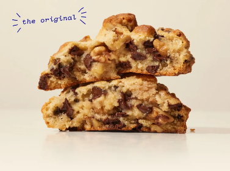
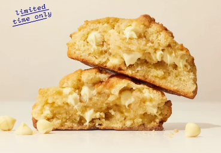
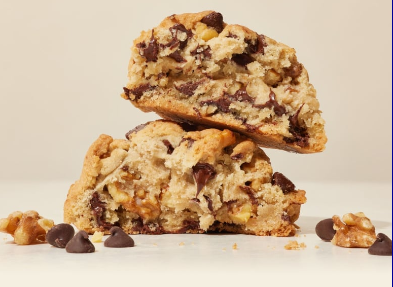
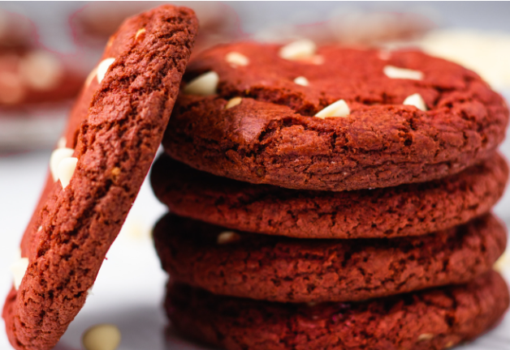
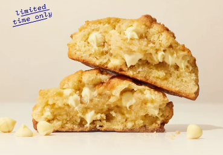
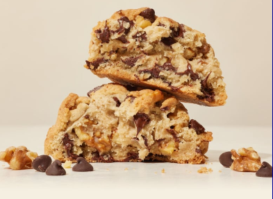
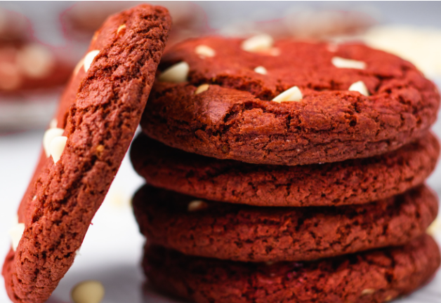
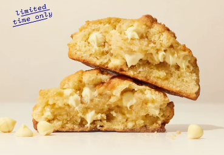
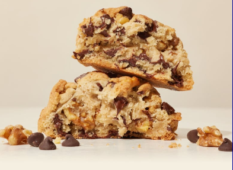
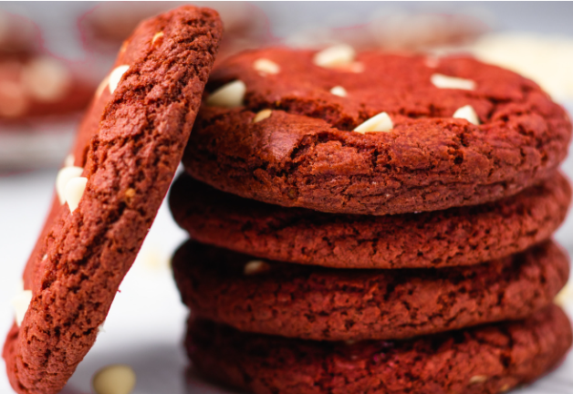

¡Bienvenidos a New York Cookies! Disfruta de las mejores galletas de la ciudad.
Sobre Nosotros
Hace mucho tiempo en la tierra de las galletas, los animales no se alejaban mucho de la manada. Los camellos se quedaban con camellos. Leones con leones. Unicornios con unicornios. Día tras día, la misma rutina. Entonces, una mañana, un volcán entró en erupción lanzando chispas al cielo y enviando ríos de glaseado fluyendo por las tierras. Para la mañana siguiente, cada criatura bajo el sol estaba cubierta de lunares y brillante. Los animales pensaron, bueno esto es raro. Pero también era muy dulce y delicioso. Los animales glaseados se hicieron amigos instantáneos. Y desde ese día, la tierra de las galletas se volvió infinitamente más divertida. Los niños han estado disfrutando de las galletas de New York Cookies desde entonces.
Conoce los productos
|
Chips
Dark
Limon
Vegan
RedVelvet
|




|
 





Contacto
Hace mucho tiempo en la tierra de las galletas, los animales no se alejaban mucho de la manada. Los camellos se quedaban con camellos. Leones con leones. Unicornios con unicornios. Día tras día, la misma rutina. Entonces, una mañana, un volcán entró en erupción lanzando chispas al cielo y enviando ríos de glaseado fluyendo por las tierras. Para la mañana siguiente, cada criatura bajo el sol estaba cubierta de lunares y brillante. Los animales pensaron, bueno esto es raro. Pero también era muy dulce y delicioso. Los animales glaseados se hicieron amigos instantáneos. Y desde ese día, la tierra de las galletas se volvió infinitamente más divertida. Los niños han estado disfrutando de las galletas de New York Cookies desde entonces.